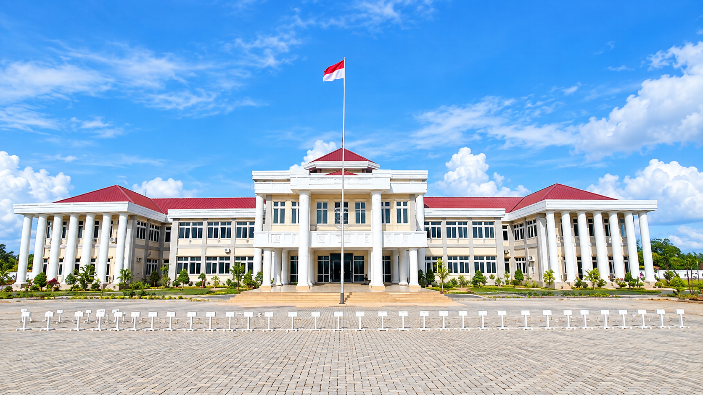

Bagian Hukum Sekretariat Daerah Kabupaten Maybrat
Profil
JDIH Kabupaten Maybrat dikelola oleh Bagian Hukum Sekretariat Daerah sebagai simpul resmi Jaringan Dokumentasi dan Informasi Hukum Nasional (JDIHN) di tingkat kabupaten, menghimpun seluruh produk dan naskah hukum daerah agar tertib, mudah ditemukan, dan terbuka bagi publik.
Terwujudnya pengelolaan dokumen hukum daerah yang tertib, terintegrasi, dan mudah diakses masyarakat Kabupaten Maybrat.
Menghimpun, mendokumentasikan, dan menyebarluaskan Perda, Perbup, Kepbup, Inbup, MOU, NPHD, hingga Surat Edaran secara akurat dan berkelanjutan.
